Origen de Pokémon
La idea principal fue desarrollada por Satoshi Tajiri, un joven adolescente que le fascinaban los insectos y la naturaleza. En estos gustos se basó para crear el videjuego conocido hoy en día como Pokémon. Fue ayudado por Ken Sugimori, un artista reconocido dibujante japonés. Tras desarrollar la idea en un proyecto, decidieron venderlo a la compañía de Nintendo. El desarrollo del proyecto duró unos 5 años. Durante este periodo, el uso de la consola Game Boy fue decayendo debido a las escasas producciones de videjuegos para estas consolas. Viendo la situación, Tajiri decidió renombrar el videojuego, tan solo tuvo que pasar un año para que las ventas superasen el millón de ventas. La directiva de Nintendo al darse cuenta de este crecimiento, decidió expandir las ventas a occidente.
Pasados los años hasta la actualidad, debido a su fama se fueron creando diferentes versiones, mangas, películas, merchandising, etc.
¿Qué es Pokémon?
Pokémon es un mundo de criaturas en los que los entrenadores se encargande capturarlas, entrenarlas y fortalecerlas para llegar a ser el mejor entrenador. Se realizan combates con varios pokemons y se van obteniendo diferentes cosas.

Funcionamiento del videojuego
El usuario es un entrenador que deberá de ir completando la Pokédex con cada captura de todos los pokemons. Estos van subiendo de nivel a través de la experiencia obtenida en cada combate o aventura vivida con el entrenador. Para obtener nuevos pokemons, el entrenador se irá desplazando por cada pueblo de cada región. Todo esto ocurre durante una historia. Al comienzo de cada historia tendrás que elegir 1 de entre 3 pokemons iniciales, este será el que te acompañe durante toda la aventura. Siempre son del mismo tipo, agua, fuego y planta.
Ediciones o generaciones
Las ediciones o generaciones son las múltiples versiones del videojuego disponibles y lanzadas al mercado. Cada una de ellas tiene pokemons exclusivos. Según se han ido creando y mejorando, muchos de los pokemons creados se han incluido en versiones posteriores, manteniendo así los ya creados y aumentando la siguiente versión con nuevas criaturas.
Actualmente existen 9 generaciones, pero como en muchos otros videojuegos existen versiones especiales.
Generación 1
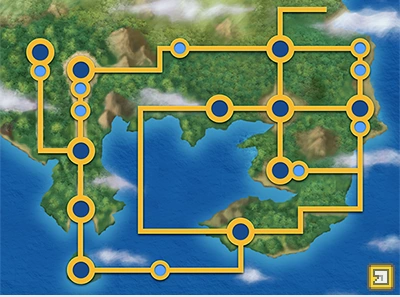
Región de Kanto
Generación 2

Región de Johto
Generación 3
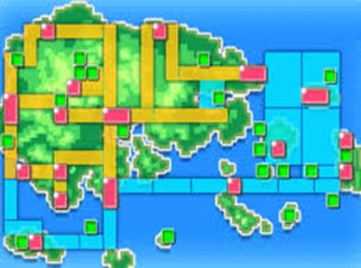
Región de Hoenn
Generación 4
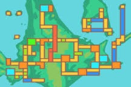
Región de Sinnoh
Generación 5
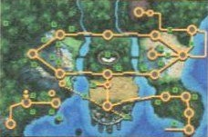
Región de Teselia
Generación 6
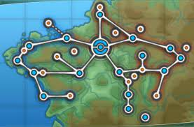
Región de Kalos
Generación 7
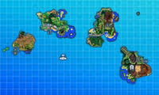
Región de Alola
Generación 8
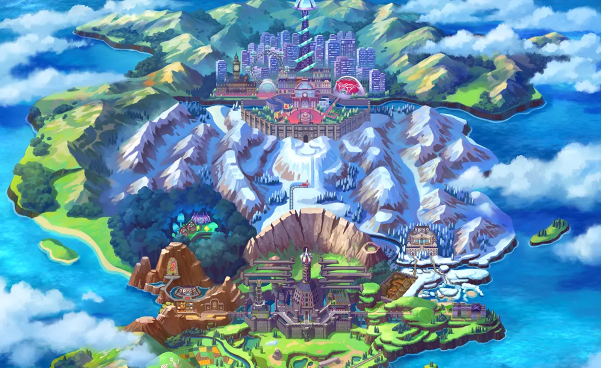
Región de Galar
Generación 9
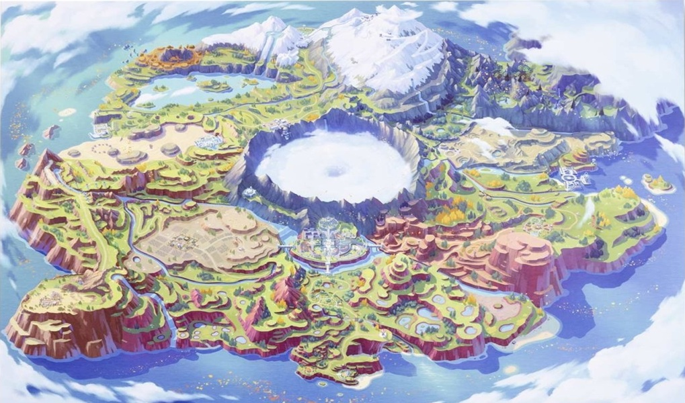
Región de Paldea
Lugares y edificios
Existen muchísimos lugares (rutas, lagunas, montes, etc) como edificios (centros pokemon, gimnasios, centros comerciales, etc) para visitar en cualquier región. En la gran mayoría se puede interacturar con NPC que pueden o no aportar información relevante sobre la historia.
Los edificios más destacados son:


Personajes y objetos dentro del juego
Personajes
Existen diferentes personajes en el videojuego, desde principales hasta secundarios. En versiones antiguas prácticamente todos los personajes eran NPCs, pero con el tiempo se ha ido implementando la funcionalidad "multijugador online" y hace referencia al poder contectarse junto a otros usuarios a través de la red; algunas acciones de las que se pueden hacer son vivir aventuras, combatir, intercambiar pokemons entre otras.
Entre estos personajes los más destacados son:
- Personaje inicial
- Aldeano/a
- Entrenador pokemon
- Líder de gimnasio
- Enfermero/a
- Profesores
Objetos
Los objetos son útiles que ayudan a los entrenadores y pokemons a realizar acciones como sanar, aumentar PS, huir de combates y lugares, enseñar movimientos, etc.
Los objetos más reconocidos son las pokeball, herramientas usadas para capturar pokemons a lo largo de la aventura, pero existen otros muchos objetos nombrados a continuación.
| Objeto |
Nombre |
Descripción |
Ratio de captura |
Imagen |
| Pokeballs |
Poké ball |
Es la pokeball más básica con el rango de captura más bajo |
x1 |
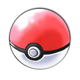 |
| Superball |
Se mejora levementa la efectividad frente a la pokeball |
x1.5 |
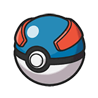 |
| Ultraball |
Se mejora levementa la efectividad frente a la ultraball |
x2 |
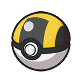 |
| Masterball |
Asegura la captura de un pokemon en un 99.9% |
x255 |
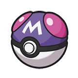 |
| Safariball |
El uso es exclusivo en la zona Safari Pokemon |
x1.5 |
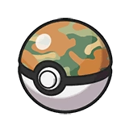 |
| Sanaball |
El uso es similiar al de una pokeball con la diferencia de esta cura todos los PS del pokemon capturado |
x1 |
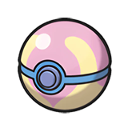 |
| Ocasoball |
Su efectividad aumenta en cuevas o cuando el tiempo es nocturno |
34 |
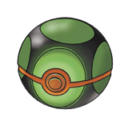 |
| Nidoball |
Aumenta su efectividad contra más bajo sea el nivel del pokemon |
(40 - nivel de pokemon) / 10 |
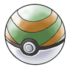 |
| Mallaball |
La efectividad aumenta cuando se captura a un pokemon de tipo bicho o agua |
3,52 |
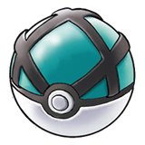 |
| Buceoball |
Aumenta la posobilidad y efectividad de capturar a un pokemon cuando se usa el movimiento buceo |
3,53 |
 |
| Velozball |
Es más efectiva en el primer turno de captura |
55 |
 |
| Turnoball |
Según pasen los turnos del combate aumentará su efectividad |
(Turnos + 10) / 10 |
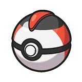 |
| Objeto |
Nombre |
Uso / Descripción |
Imagen |
| Pociones |
Poción |
Restaura al pokemon al que se le aplique 20 PS |
 |
| Superpoción |
Restaura al pokemon al que se le aplique 60 PS |
 |
| Hiperpoción |
Restaura al pokemon al que se le aplique 120 PS |
 |
| Max. Poción |
Restaura al pokemon al que se le aplique todos los PS |
 |